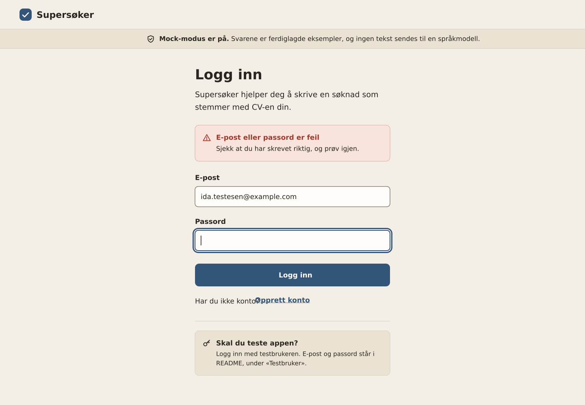
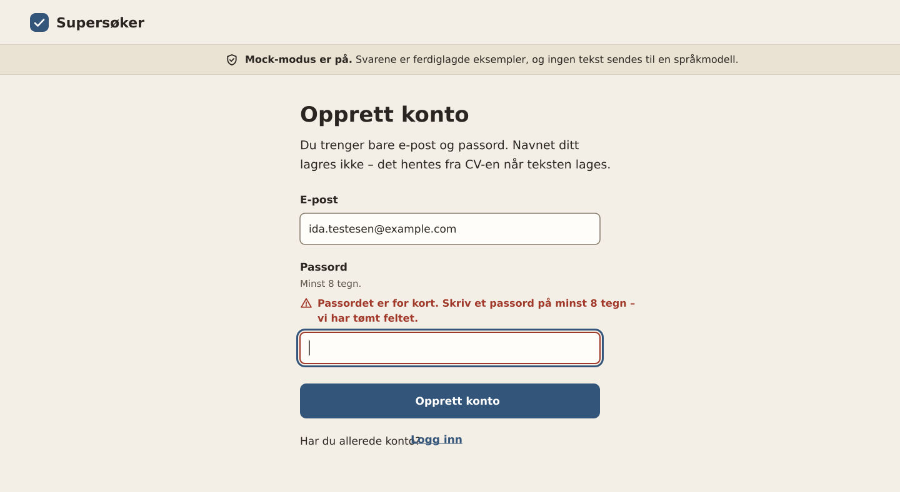
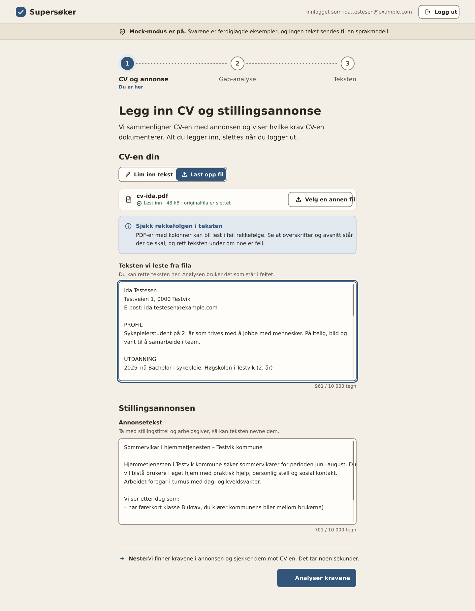
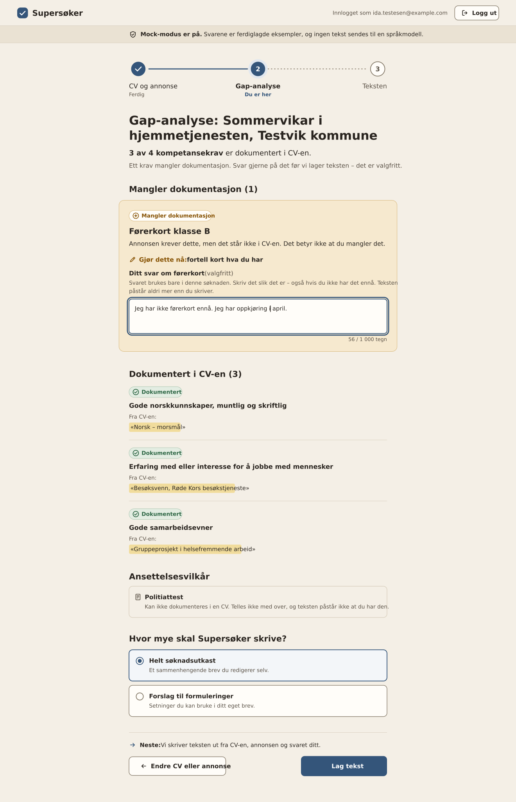
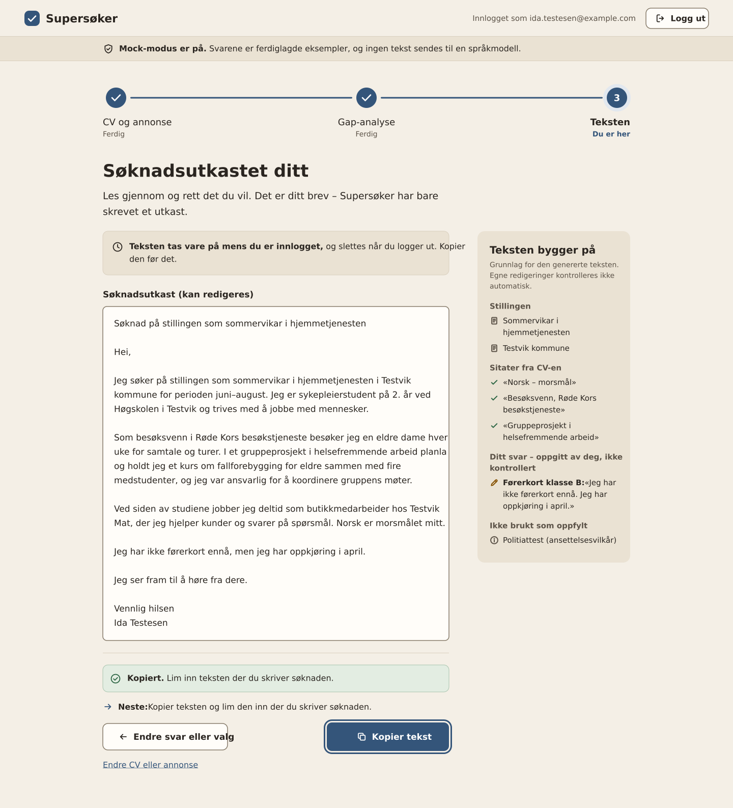

Konsept 1: Rolig veiviser
Én ting om gangen. En smal, luftig kolonne på varmt papir, en stor stegindikator øverst og én dempet blå aksent. Hvert steg ender i Neste-linjen: en kort setning om hva som skjer når du trykker, og primærknappen rett under.
Skissene er statiske SVG-er med fiktive data fra testpar 1. De viser retning, ikke ferdig spesifikasjon. Begrunnelse, fargeverdier med kontrastforhold og antagelser står i konsept.md.
01 Logg inn
Innlogging etter feil e-post eller passord. Én felles melding som ikke avslører om e-posten finnes, fokus i passordfeltet og et rolig hint om testbrukeren i README.
Åpne 01-logg-inn.svg i full størrelse 1440 × 997 px


02 Opprett konto
Valideringsfeil ved for kort passord: e-posten er beholdt, passordfeltet er tømt, merket ugyldig og har fokus, og meldingen sier hvordan det rettes.
Åpne 02-opprett-konto.svg i full størrelse 1440 × 789 px


03 Steg 1 – tom tilstand
Første steg uten innhold. Stor stegindikator, tilbud om å laste inn testpar 1, veksler mellom innliming og opplasting, og «Analyser kravene» nederst i Neste-linjen.
Åpne 03-cv-og-annonse-tom.svg i full størrelse 1440 × 1681 px

04 Steg 1 – utfylt
cv-ida.pdf er lest inn og vises som redigerbar tekst, med påminnelse om å sjekke kolonner og overskrifter. Tegntellere for CV og annonse.
Åpne 04-cv-og-annonse-utfylt.svg i full størrelse 1440 × 1850 px


05 Steg 1 – feiltilstander
En fil som ikke kan leses, navngis, og tidligere CV-tekst beholdes. Tomt annonsefelt får melding rett ved feltet, rød kant og fokus.
Åpne 05-cv-og-annonse-feil.svg i full størrelse 1440 × 1798 px

06 Tittel og arbeidsgiver
Funnet stillingstittel kan rettes. Arbeidsgiveren ble ikke funnet, og en markert blokk forklarer hvorfor den trengs.
Åpne 06-tittel-og-arbeidsgiver.svg i full størrelse 1440 × 1093 px

07 Analyserer
Venting: knappen er deaktivert og viser «Analyserer …», og CV-en og annonsen står synlig og uendret.
Åpne 07-analyserer.svg i full størrelse 1440 × 1672 px

08 Steg 2 – gap-analyse
Kjerneskjermen. Opptellingen «3 av 4», manglende krav først som en «gjør dette nå»-blokk med svarfelt, deretter dokumenterte krav med sitat, ansettelsesvilkår og omskrivingsvalg.
Åpne 08-gap-analyse.svg i full størrelse 1440 × 2234 px


09 Steg 2 – tomtilstander
To varianter: alle kompetansekrav er dokumentert (testpar 4), og ingen tydelige krav i annonsen. Begge kan gå videre til «Lag tekst».
Åpne 09-gap-tomtilstander.svg i full størrelse 1440 × 3027 px

10 Steg 3 – helt søknadsutkast
Brevet i et redigerbart felt med «Teksten bygger på» i en smal sidekolonne. Bekreftelsen «Kopiert.» og påminnelsen om sletting ved utlogging.
Åpne 10-soknadsutkast.svg i full størrelse 1440 × 1587 px


11 Steg 3 – forslag til formuleringer
Forslag som liste. Veiledningen står i en egen boks merket «Veiledning – ikke del av søknaden» og følger ikke med ved kopiering.
Åpne 11-forslag-til-formuleringer.svg i full størrelse 1440 × 1458 px

12 Endre CV eller annonse
Bekreftelsesdialog som lister hva som forkastes. «Avbryt» har fokus som det trygge valget.
Åpne 12-endre-cv-dialog.svg i full størrelse 1440 × 1516 px

13 Feil fra språkmodellen
Tidsavbrudd og ugyldig analyse. Meldingen står rett over «Prøv igjen» nederst, og inndataene er beholdt.
Åpne 13-feil-fra-sprakmodell.svg i full størrelse 1440 × 2824 px

14 Leverandørvarsel (API-modus)
Før første modellkall: dialogen navngir OpenAI og sier at ingenting sendes før brukeren bekrefter.
Åpne 14-leverandorvarsel.svg i full størrelse 1440 × 1630 px

15 Øktvarsel og utlogging
Varsel etter 25 minutter med «Fortsett økten», og innloggingssiden etter automatisk utlogging med forklaring om at dataene er slettet.
Åpne 15-oktvarsel.svg i full størrelse 1440 × 3393 px

16 Mobil – gap-analyse
Gap-analysen på 390 px. Steglisten viser bare aktivt steg, alt er stablet, og knappene har full bredde nederst.
Åpne 16-mobil-gap-analyse.svg i full størrelse 390 × 2415 px

17 Mobil – søknadsutkast
Søknadsutkastet på 390 px med åpnet panel «Teksten bygger på» og «Kopier tekst» nederst.
Åpne 17-mobil-tekst.svg i full størrelse 390 × 1875 px